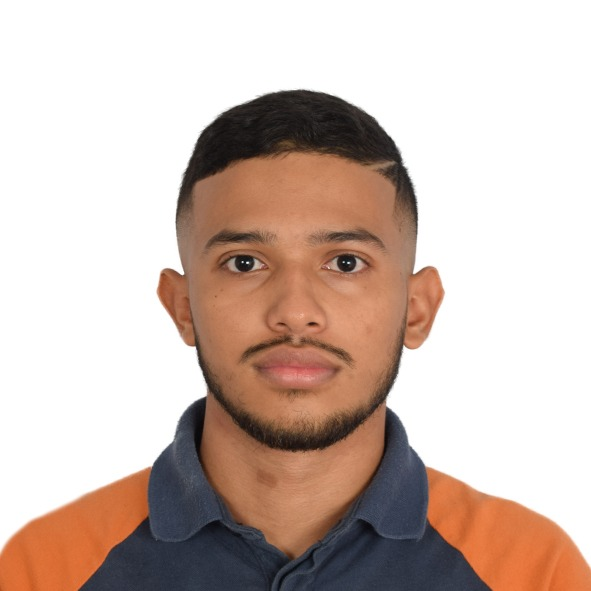
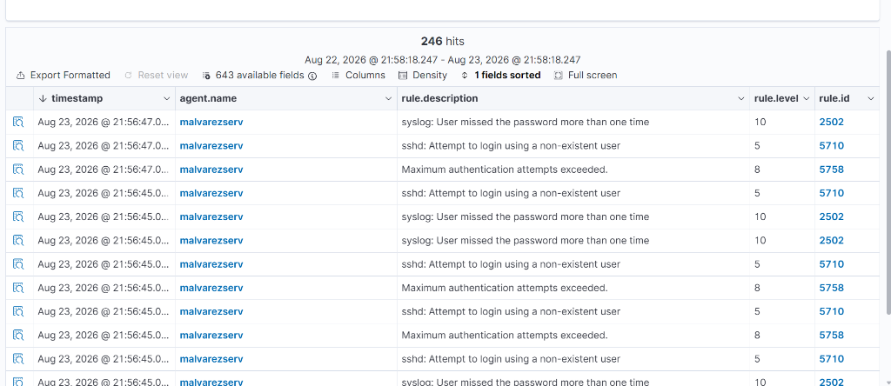

Mario de Jesús Álvarez Ramos
Ingeniero de Sistemas · Analista de Ciberseguridad Defensiva (SOC) · Administrador de Redes & Sistemas TI
Especialista en arquitectura y administración de redes empresariales, servidores (Linux/Windows Server), operaciones de centro SOC (Wazuh SIEM/XDR, Suricata NIDS) y fortificación de microservicios contenerizados en Docker. Experiencia comprobada en resolución de contingencias en producción, mitigación de ataques en tiempo real y arquitectura de confianza cero (Zero Trust).
Ecosistema Tecnológico de Operación
Terminal Interactiva del Servidor
Escribe comandos o pulsa las opciones rápidas para auditar en tiempo real el estado de los servicios, red y contenedores.
Servicios & Plataformas Desplegadas
Ecosistema desacoplado de microservicios con aislamiento de red, túneles seguros y protección perimetral.
RiskGuard Enterprise
Sistema integral de gestión de riesgos TI alineado a ISO/IEC 27001. Arquitectura contenerizada en Docker (Nginx, PHP-FPM, MySQL 8.4, Redis, colas y scheduler), con Rate Limiting defensivo anti-fuerza bruta.
Showcase del Servidor & Auditorías
Portal técnico interactivo con la documentación de los 8 laboratorios de ciberseguridad, mitigación de conflictos en puerto 443, optimización de pasarelas FastCGI y pruebas de estrés DoS con ApacheBench.
Wazuh SIEM / XDR
Centro de operaciones SOC. Detección de amenazas en tiempo real, monitoreo de integridad (FIM con hashes SHA256), correlación de eventos con MITRE ATT&CK y mitigación activa con iptables en el kernel.
Uptime Kuma
Observabilidad y monitoreo continuo 24/7. Comprueba periódicamente la salud de RiskGuard, Wazuh Dashboard, base de datos MySQL y latencia del gateway de red.
Portainer CE
Gestión visual y telemetría de los contenedores en ejecución sobre el servidor. Administración de redes bridge, volúmenes de almacenamiento persistente y políticas de aislamiento.
Evidencias Forenses & Auditorías en Vivo
Explora las pruebas reales de ataque y defensa ejecutadas en el entorno: Hydra, Wazuh SIEM, NIDS Suricata y Rate Limiting.
Detección de Fuerza Bruta SSH (Hydra vs Wazuh)
Simulación de ataque de fuerza bruta distribuido con Kali Linux (Hydra) contra el servicio SSH. El agente Wazuh identificó ráfagas de autenticaciones fallidas, correlacionó la regla 5712 (Level 10) y disparó la alerta en la consola SIEM.

Matriz de Competencias Verificadas
Habilidades técnicas evaluadas en laboratorios reales y plataformas de producción.
Redes & Conectividad
- Arquitectura TCP/IP y Modelo OSI
- VLANs (802.1Q), Enrutamiento & Troncales
- Listas de Control de Acceso (ACLs) y NAT/PAT
- VPNs WireGuard y Tailscale Zero Trust
- Simulación Cisco Packet Tracer & Wireshark
- Servicios de Red (DNS, DHCP, SSH Hardened)
Ciberseguridad & SOC
- Wazuh SIEM/XDR y Suricata NIDS
- Monitoreo de Integridad FIM (Hashes SHA256)
- Detección de CVEs (NVD y Canonical OVAL)
- Respuesta Activa en Kernel (iptables DROP)
- Mapeo MITRE ATT&CK (T1110, T1070)
- Auditoría CIS Benchmark (SCA) e ISO 27001
Soporte TI N1 / N2
- Active Directory (AD DS, GPO, RBAC)
- Windows Server & Linux (Ubuntu/Debian)
- Diagnóstico y Resolución (Troubleshooting TI)
- Gestión de Incidentes bajo buenas prácticas ITIL
- Virtualización en VMware y VirtualBox
- Gestión de Copias de Seguridad & Continuidad
DevOps & Hardening
- Contenerización con Docker & Docker Compose
- Reverse Proxy Nginx y Rate Limiting defensivo
- Cifrado SSL/TLS con renovación automática
- Scripting y Automatización en Bash & PowerShell
- Control de versiones con Git & GitHub
- Bases de datos MySQL 8.4 y Cache Redis